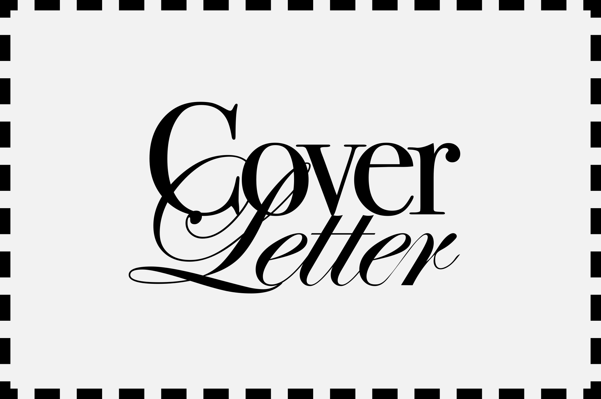
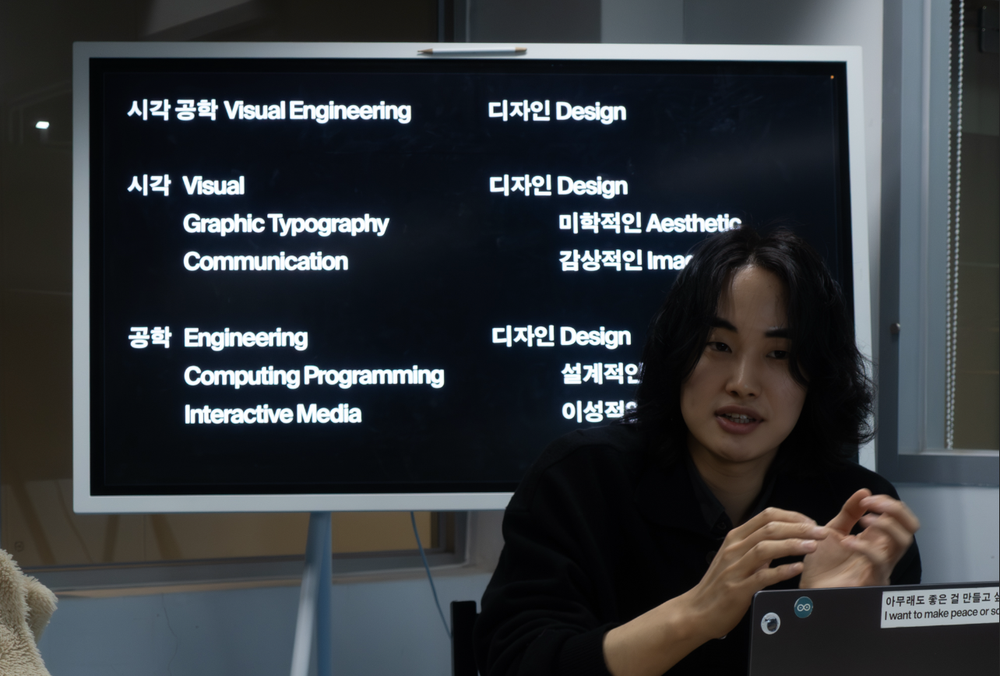
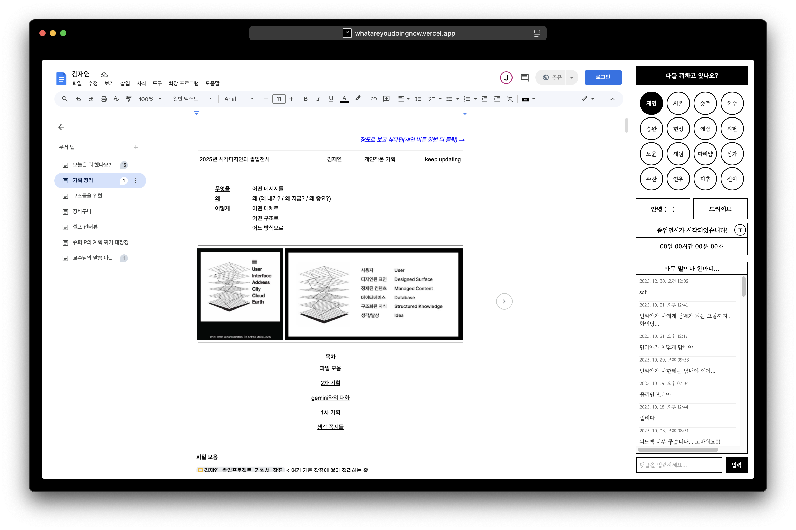
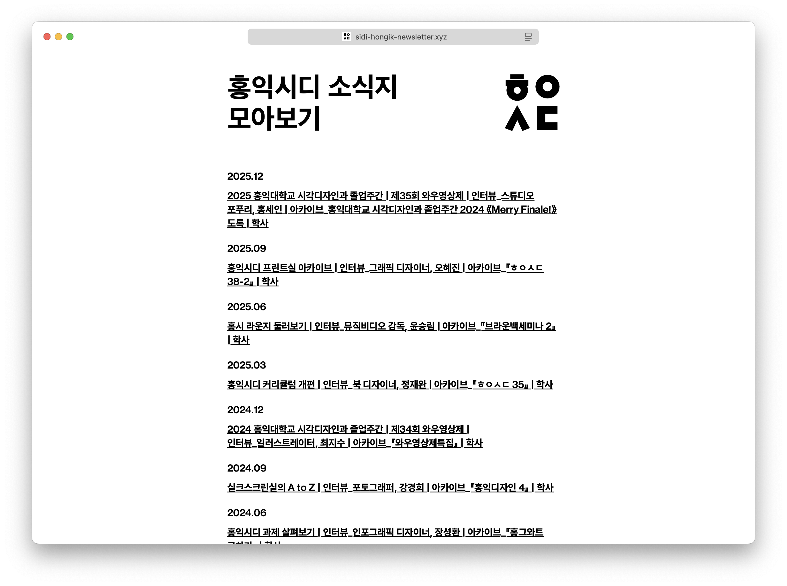
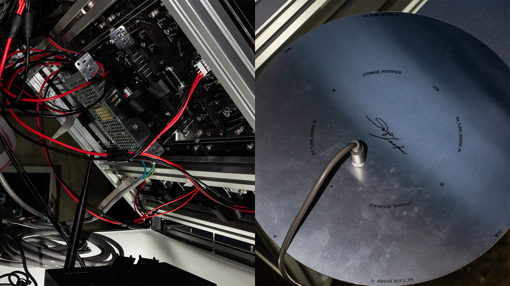
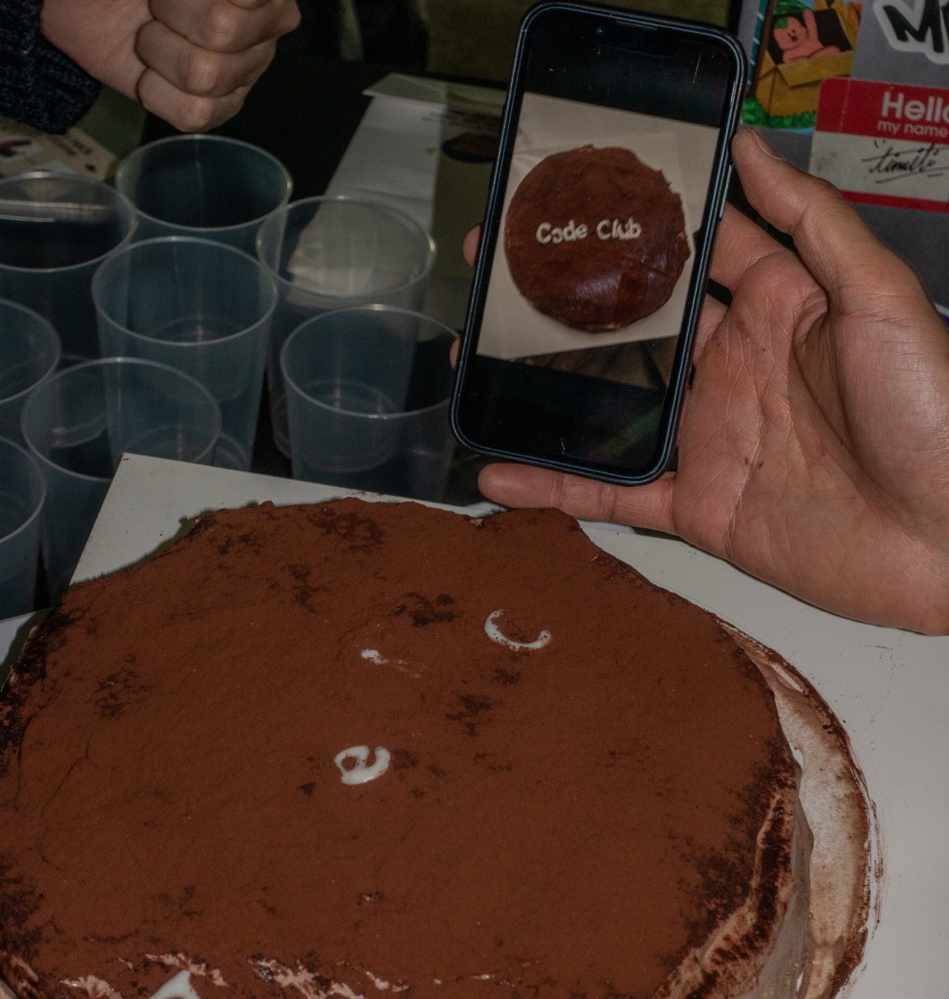

강이룬 교수님 안녕하세요. 김재연 인사드립니다.
그간 평안하셨는지요? 날이 부쩍 추워졌는데, 모쪼록 건강하고 안녕한 겨울 보내고 계시길 바랍니다.
커버레터를 작성하는 것이 처음이라 어떤 방식으로 제 마음을 전할지 고민이 많았습니다. 결국 커버레터 또한 하나의 편지라는 생각으로, 현재 제가 가진 고민과 목표를 진솔하게 담아보기로 했습니다. 편하실 때 천천히 읽어주시면 감사하겠습니다.

이미 몇 차례 인사를 드린 적이 있으나, 다시 한번 정식으로 저를 소개하고자 합니다.
저는 시각 공학 디자인(Visual Engineering Design)을 연구하는 김재연입니다. 저는 감각과 기술을 매개하며, 새로운 영역으로 나아가는 것을 두려워하지 않습니다. 기술을 익히며 새로운 가능성을 탐구하고, 감각하는 몸과 작용하는 힘에 반응하는 매체를 만듭니다.

‘시각 공학 디자인’은 제가 추구하는 디자인 철학을 언어로 정립해 본 개념입니다. 도구를 중심으로 디자인 시스템에 대한 해석과 비평, 연구를 이어가시는 교수님의 행보를 보며, 저 또한 제가 가진 개념을 명확히 설명하고 싶다는 열망으로 다듬어 보았습니다. 저는 시각적인 소통을 중심으로 한 미학적 디자인과 함께 공학적인 설계적 디자인을 함께하며, 상호작용을 중심으로 한 우리의 몸짓과 감각, 반응에 대한 해석과 설계를 통해 새로운 영역을 탐구합니다.
홍익대학교 시각디자인과 학부에서 정통적인 타이포그래피를 중심으로 한 디자인을 솔찬히 수학하며 그래픽 디자인과 커뮤니케이션 디자인에 대한 관점과 태도를 확립했습니다. 이에 더해 프로그래밍과 설계 역량을 키우며, 시각과 공학의 접점에서 피지컬 매체와 디지털 매체 사이의 연결성을 탐구해 왔습니다.
제게 인생의 이정표와 같았던 교수님께서 카이스트에 부임하셨다는 소식은 무엇보다 반가운 일이었습니다. 제가 학업을 이어 나가던 시절 초반에, 코드를 활용한 시각 작업이 단순히 ‘미디어 아트’라는 틀 안에 갇히는 것에 회의를 느끼던 중, ‘코드로 디자인하는 사람’을 찾다 강이룬 교수님과 심규하 디자이너님을 알게 되었습니다. 두 분의 작업과 행보는 제게 큰 길잡이가 되었습니다. 프로그래밍을 통한 디자인의 가능성에 의구심이 들 때마다 두 분의 강연 자료와 작업들을 다시금 꺼내 보며 마음을 다잡곤 했습니다. 심규하 연사님의 디자인 시스템을 설계하는 컴퓨테이셔널 디자인에 대한 관점과 강이룬 교수님의 도구를 통한 디자인 비평은 큰 배움의 축이 되었으며, 특히 강이룬 교수님의 MIT Media Lab 작업은 큰 예시로서 제가 하려는 디자인을 설명할 때 자주 인용하곤 했습니다.

디자인과 개발을 병행하는 많은 창작자가 겪는 고민처럼, 저 역시 ‘무엇이 우선인가’를 오래도록 자문해 왔습니다. 그때마다 저의 답은 늘 ‘디자인’이었습니다. 시각적인 결과물을 중심으로 동작과 기능을 불어넣는 개발의 역할에 집중하며, 단순히 표상에 머물지 않고 살아 움직이는 동작을 통해 사용자와 연결되기를 희망합니다.
이번에 시각도구연구실에 지원하는 것은, 저의 그래픽 디자인 베이스를 더욱 공고히 하고 연구의 기틀을 마련하기 위한 결정입니다. 최근 졸업 작품을 마무리하며 인터랙티브 아트를 구축하는 엔지니어링이나 작가 활동으로의 연계도 고려해 보았으나, 저는 여전히 제 활동을 ‘디자인’으로 규명하며 예술가보다는 디자이너로 불리길 희망합니다.
동시에, 교수님께서 짚어주신 도구를 바탕으로 디자인을 이루는 시스템에 대한 해석에 깊게 공명합니다. 앞으로 시각도구연구실에서 진행하실 프로젝트에 대해 그 어떤 프로젝트더라도 그것을 대하는 방법과 사유의 측면에서, 깊게 공명하는 방식을 통해 제 생각에도 좋은 작업 경험이 될 것이란 것을 스스로 확신할 수 있습니다. 더불어 제가 가진 역량이 시각도구연구실 안에서 큰 상호작용을 불러오길 진심으로 기대하고 희망합니다.
제가 생각하는 저의 강점은 크게 두 가지입니다.
첫째, 기술을 새로 익히는 데 주저함이 없습니다. 동시에, 기술적 구현 과정의 모호함과 불안을 이겨내는 끈기가 있습니다. 구현하고자 하는 목적에 필요한 기술이라면 시간이 걸리더라도 끝까지 탐구하고 적용합니다. 일례로 뉴스레터 『홍익시디 소식지』를 기획·구축할 당시, 메일링 시스템의 HTML/CSS 적용 범위 문제로 난관에 부딪혔으나 반복적인 리서치와 테스트 끝에 최적의 디자인 조건을 찾아냈습니다. 그 결과 소식지는 현재까지도 후배들에게 인수인계되어 안정적으로 운영되고 있습니다.

최근 제작한 졸업 작품 〈낯선 접점〉 또한 제게 큰 도전이었습니다. 인터랙션의 전 과정을 스스로 통제하기 위해 알루미늄 프로파일 구조체 설계, 금속 레이저 커팅 가공 발주, PCB 기판 설계 등을 직접 수행했습니다. 특히 LED 패널 설치는 개인으로서 기술적 장벽이 높았으나, 수개월간의 실패를 반복한 끝에 전시 전날 성공적으로 화면을 송출할 수 있었습니다.

기술 구현의 단계에서 ‘예술적 작품’과 ‘기술적 작품’의 가장 큰 차이는 ‘기능의 완결성’이라 생각합니다. 메시지와 내러티브가 앞선 예술과 달리, 작동하지 않는 순간 설계 의도가 상실되는 기술 기반 작업의 특성상, 수많은 변수를 통제하며 0에서 1을 만들어가는 과정은 고통스럽지만 즐겁습니다. 이러한 집요함은 비단 피지컬 컴퓨팅뿐만 아니라 복잡한 구조를 지닌 모든 디자인 과정에서 저의 큰 자산이 될 것입니다.
둘째로는, 저는 저의 주변 사람들을 살피고 챙기는 것을 매우 소중히 여깁니다. 이는 개인적인 성격과 성향을 넘어 제가 지향하는 디자인 관점과도 맞닿아 있습니다. 생산자, 클라이언트, 대중 모두가 행복할 수 있는 디자인이 좋은 디자인이라 믿기 때문입니다. 결국에 디자인은 사람 사이의 소통이며, 그 관계가 얼마나 아름답게 지어졌는지가 중요하다고 생각합니다. 몇 번의 클라이언트 업무와 콜렉티브 활동을 거치며, 제가 속한 곳이 아름답고 구성원들이 함께 행복할 수 있도록 진심으로 대하며 노력하는 자세를 길러왔습니다.

이러한 역량과 가치관을 바탕으로 성실한 태도로 임하여 시각도구연구실에서 앞으로 진행하실 일들에 대해 큰 도움이 될 수 있도록 노력할 것을 약속드립니다. 줄곧 성실함과 책임감과 끈기는 제 큰 자산이었고 이번에는 그 어느 때보다 오래된 애정을 바탕으로 지원하는 만큼, 더욱 깊이 있는 태도로 임하여 제 역량을 최대한 발휘할 수 있도록 노력하겠습니다.
두 번의 연구실 방문과 AABB 강연을 통해 교수님의 사유에 깊이 공명함을 느꼈습니다. 제가 홀로 고민하던 지점들을 앞서 탐구하고 비평해 오신 교수님 곁에서, 하루라도 빨리 많은 것에 관해 대화하며 배우고 싶습니다.
커버레터를 정리하는 이 순간까지도 연락이 너무 늦지는 않았을지, 혹은 제가 인턴을 지원할 만큼 충분한 자격을 갖추었는지, 그리고 저를 어떻게 소개하여야 할지 고민이 많았습니다. 연이은 전시를 치르며 소진된 자산과 현실적인 여건 걱정에 진로 고민도 깊었지만, 결국 당장의 생활을 간소하게 꾸리더라도 더 깊은 경험을 통해 저의 층위를 넓히는 시간을 갖기로 결심했습니다. 현재 졸업 유예 신청이 승인되어 신분상으로도 연구실 활동에 전념할 수 있는 상태입니다.
인턴쉽의 구체적인 조건과 형태는 편히 얘기 나눠보면 좋겠습니다. 대전으로 내려가는 일정은 당장 다음 주라도 가능하도록 비워두었습니다. 편하신 시간에 말씀 주시면 감사하겠습니다.
두서없는 긴 글 읽어주셔서 감사합니다. 긍정적인 답신을 기다리겠습니다.